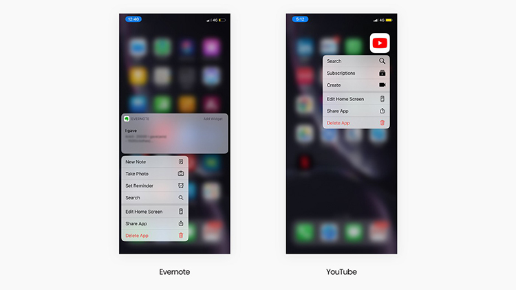

A flexible and efficient system isn't just about helping users transition from novice to expert use, it's also about allowing users to approach tasks in multiple ways to suit their working style. This can be as simple as structuring functionality in an open-ended rather than a prescriptive way.
